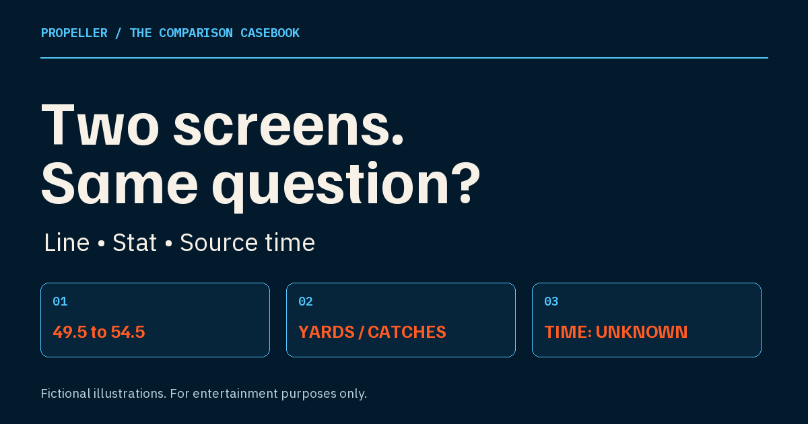

How to compare player prop lines before interpreting the difference.
Compare the same player, event, stat, direction and exact number. Record each named source and its time evidence separately. Label a mismatch or an unknown before deciding what the difference means. A changed threshold asks a different question; a later timestamp alone does not.
By Scott Olmer, Founder · Updated September 18, 2026 Originally published August 17, 2026 · AI-assisted production

01 / Identify the question
Write six fields, with the event beside them.
A saved screenshot and a research screen can look similar without describing the same thing. Before comparing an explanation, copy the question into two rows. Use the event, opponent and game date as shared context so that a familiar player name does not hide a different game.
Player. Confirm the same person.
Stat. Keep the exact category and units.
Direction. Record More/Over or Less/Under.
Line. Copy the exact threshold, including decimals.
Source. Name each screen or platform.
Time. Separate source-update evidence from capture or viewing time.
Different source names can be deliberate: that is often why you opened two screens. Different clock readings can also be legitimate observations. Neither must be forced into an identical value. What matters is knowing what each source shows and what each time actually measures. An unexplained source or absent source-observation time stays a limitation.
02 / A real, dated handoff
What a research link preserves—and what it leaves to you.
In an AI-operated check on September 10, 2026, a public Propeller card showed an Under direction. Following its research-prompt link carried the player, stat, exact line and source label into a form whose goal was Evaluate both sides. The same day's inspected public response left its line-observation and analysis times unknown.
This dated demonstration shows what was carried across, not a current platform line or a completed comparison. No real two-platform price comparison or measured line movement was observed. The useful lesson is to inspect the destination instead of assuming that a link carries every part of the original question.
Carried: player, stat, exact line and the label “Propeller public analyzer snapshot.”
Check on the original card: direction.
Confirm independently: event and game context.
Unknown in that response: source-observation and analysis times.
Not a substitute: snapshot or capture time cannot supply the missing source clock.
The research prompt builder organizes a question. Generating text does not fetch sources or verify a live line. Preserve the question first, then check the evidence it asks you to find.
03 / Three fictional illustrations
Find the mismatch before interpreting it.
Every case below uses the invented Example Player B and invented event Cedar vs Birch, September 2, 2026, 7 PM America/Chicago. All source, capture and viewing times are fictional September 1, CDT. Both rows are questions, never recommendations.
Number mismatch. Player, event, stat, direction and named source match.
The threshold difference is 54.5 minus 49.5: 5 receiving yards. That is the change in the question, not a result or a measured advantage. Keep the two source timestamps as separate observations two hours apart; do not overwrite the earlier row to make the history look consistent.
An explanation written for 49.5 cannot simply be relabeled as research for 54.5. These rows do not establish why the number changed, which choice is better, or whether either side offers an advantage. The table tells you what needs checking, not what to select.
Next check: reopen the current source and match its exact number before comparing interpretations. If you cannot recover the current question, stop at the documented mismatch.
Fictional illustration / Case 2
The stat changed: yards versus catches.
Saved row
Fictional Board A · More than 49.5 receiving yards · source updated 10:00 AM.
Other row
Fictional Board A · More than 4.5 receptions · source updated 10:00 AM.
Status
Stat and number mismatch. Player, event, source and source time match.
Receiving yards measures a distance total. Receptions counts catches. The player and direction can match while the stat changes the meaning of the row completely. A shared event or timestamp does not repair that difference.
Do not subtract 4.5 from 49.5: the values have different units. Do not convert the receptions threshold with an assumed yards-per-catch figure, either. That would introduce a new assumption instead of matching the displayed questions. Even an appealing explanation about the player's role needs the correct stat attached to it.
Next check: find the same stat category on both screens, then verify direction and exact threshold again. Until those fields align, keep the records separate rather than describing one as a better version of the other.
Fictional illustration / Case 3
The number matches. The source clock is unknown.
Saved image
Fictional Board A · receiving yards · More 49.5 · captured 10:05 AM · source update absent.
Current board
Fictional Board A · receiving yards · More 49.5 · viewed noon · source update absent.
Status
Player, event, stat, direction, line and source match. Freshness unknown.
The capture and viewing clocks tell you when someone saw each screen. Neither establishes when the underlying line was observed or updated. The two screens may display an identical number without giving you evidence that they represent the same data version.
Do not label the saved image stale just because you opened another screen later. Do not label the current board fresh merely because it was visible at noon. These records establish neither an outage nor a refresh interval. “Unknown” is a useful finding because it keeps an unsupported timing claim out of the comparison.
Next check: reopen the source and look for explicit source-update evidence. If that evidence remains absent, retain Unknown and avoid treating either clock as proof of freshness.
04 / Keep the terms separate
A market price is not an entry multiplier.
An individual sportsbook price describes one side of a market. A pick’em multiplier applies to an entry and depends on its format and rules. Even after the player-prop question matches, these terms belong in separate fields.
Record the price with its market and direction. Record entry terms with the applicable entry format and source. Do not put the two numbers side by side and call the larger one better. Matching a threshold does not remove differences in grading or entry rules.
This guide supplies no current payout table, platform ranking or conversion formula. Check the relevant source for its own terms; if you cannot identify which terms apply, leave that part of the comparison unresolved.
05 / Finish with a check, not a guess
Unknown is a valid outcome.
Match: the question aligns in the same event context; sources are identified.
Mismatch: name the changed field and retain both observations.
Unknown: name the missing evidence without assigning a cause.
Write one next verification step, such as finding the same stat or locating a source-update time. Use the printable comparison check card (PDF) for paired rows. If the missing evidence cannot be recovered, taking no action preserves the uncertainty honestly.
Related questions
Before you reuse an old screenshot
Does a changed number change the question?
Yes. The threshold changes, so do not reuse the earlier interpretation as though it answers an equivalent question. Verify the exact number attached to the research.
Does a screenshot time prove line freshness?
No. Capture time and source-observation time are separate. A screenshot records what was visible when captured, not necessarily when the underlying line was updated.
Does Propeller automatically compare every platform?
No. Propeller supplies research for the displayed line. You still need to verify the exact question, named source, time evidence and applicable platform terms.
Desktop walkthrough / 3:43
Watch the exact-line workflow.
Key takeaway: Keep source and time next to every row. Refresh each screen before making a comparison, and choose no action when the questions do not match.
Source note: first-party analyzer and prompt-builder definitions checked September 18, 2026; the AI-operated product observation remains dated September 10. Fictional cases are original teaching illustrations. See our editorial policy for AI-assisted production and review.